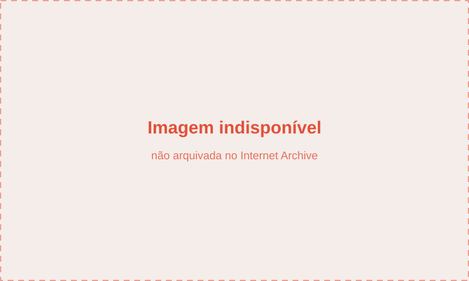

O app no divã: um estudo de caso do aplicativo Cíngulo
Apresentação
Que concepções de bem estar psíquico e emocional legitimam as funcionalidades do aplicativo de terapia digital Cíngulo? Em que medida a ênfase na autonomia individual, muito presente em seu discurso institucional, reaparece na experiência de uso do app? De que modo uma “terapia guiada por dados” reflete reconfigurações das práticas terapêuticas no atual contexto de digitalização da vida e de hegemonia neoliberal? Quais as implicações do ideal da “não fricção”, visado pela indústria digital em seus produtos, numa proposta terapêutica?
Estas são algumas das perguntas que animaram a investigação cujo resultado divulgamos neste relatório. Como um contraponto à proposta de uma cultura terapêutica veloz, fácil e “lisa” ofertada pelo aplicativo Cíngulo em sua “jornada de autoconhecimento”, nosso gesto metodológico e tecnopolítico foi o de criar fricção nesse fluxo. Através de uma (contra)jornada da usuária com o intuito de inserir um estranhamento num processo idealizado como fluido e desprovido de hesitações, analisamos o processo de recodificação da saúde mental e das práticas de cuidado de si materializados no aplicativo.
Este relatório apresenta e analisa os resultados de um estudo de caso do aplicativo Cíngulo e corresponde à segunda etapa da pesquisa realizada pelo MediaLab.UFRJ sobre aplicativos de autocuidado psicológico e emocional, os PsiApps. Um dos PsiApps mais utilizados no Brasil e eleito pelo Google como melhor aplicativo em 2019((https://play.google.com/store/apps/topic?id=campaign_editorial_bestof2019_bestapp)), o Cíngulo se apresenta como um app de “terapia digital” ou “terapia guiada”, com o qual “você pode resolver as questões emocionais que mais atrapalham a sua vida e se aprimorar pelo autoconhecimento”. O Cíngulo seria, ainda, “um programa completo, personalizado e fácil de usar”, fruto da “união da sensibilidade humana, ciência e inteligência artificial para a cura emocional“.
O Cíngulo foi o aplicativo que se mostrou mais relevante segundo os critérios que orientaram o mapeamento dos PsiApps mais populares no Brasil((O mapeamento e rankeamento dos 10 aplicativos de saúde mental seguiu os critérios de 1) relevância para a pesquisa (menção a ferramentas de monitoramento de estados psíquicos, humor e/ou emoções; e 2) popularidade (somente foram selecionados aplicativos com mais de 5 mil avaliações na Google Play Store).)), apresentado no relatório “Tudo por conta própria”: aplicativos de autocuidado psicológico e emocional”. Nesta etapa da pesquisa, buscamos compreender as funcionalidades do aplicativo e o tipo de experiência que promove para o usuário, bem como as avaliações explícitas que estes fazem do app. Para tanto, exploramos dois eixos de análise. O primeiro consistiu na análise dos comentários das/os usuárias/os do Cíngulo na Google Play Store, a loja de aplicativos da Google. O segundo baseou-se na experiência direta de uso do app. O estudo do Cíngulo a partir dos dois eixos de análise nos permitiu identificar importantes aspectos da experiência da/o usuária/o, assim como do modelo de mente e de subjetividade, do entendimento de bem-estar psicológico e emocional e do tipo de experiência terapêutica que estão na base do aplicativo e que norteiam as práticas de cuidado de si por ele propostas. Os dois eixos de análise serão melhor detalhados no próximo tópico.
Dentre os resultados da pesquisa, destacamos alguns pontos. Na análise dos comentários da Google Play Store, identificamos uma quase unanimidade de elogios ao app, sobretudo em relação à precisão da análise de personalidade da ferramenta de autoavaliação. Já no mapeamento da experiência de uso do app, percebemos que as promessas de personalização enunciadas por seus promotores não se concretizam. Além disso, descobrimos uma grande semelhança entre o questionário utilizado na autoavaliação e o modelo de avaliação de temperamento afetivo e emocional (AFECT), criando uma zona nebulosa de extração e utilização de dados psicológicos e emocionais. Nas Sessões de Autoconhecimento e Terapias SOS, notamos a presença de um entendimento computacional da mente e de promessas de recodificação das subjetividades através das ferramentas ofertadas. Esta recodificação, segundo o app, pode ser otimizada mediante práticas de treinamento de si que convertem a/o usuária/o em uma interface programável para se tornar mais produtiva/o no trato das atividades e emoções cotidianas. Prevalece, em toda a jornada da usuária, um modelo de bem-estar psicológico e emocional centrado na individualidade e na autonomia, ressoando modos de subjetivação neoliberais e das múltiplas formas de cisão relacional que ele instaura.
Metodologia
Como mencionado anteriormente, a metodologia desta pesquisa, explorou dois caminhos principais. O primeiro consistiu numa investigação quantitativa e quantitativa das resenhas publicadas sobre o Cíngulo na Google Play Store através do uso de ferramentas automatizadas de análise de dados e, posteriormente, do exame semântico por parte de nossas pesquisadoras de uma amostra de comentários. O segundo buscou simular a jornada de usuária, isto é, a trajetória que uma pessoa efetua ao baixar, abrir e utilizar o aplicativo. Analisamos, assim, de forma mais detalhada as funcionalidades e o conteúdo do Cíngulo, bem como a experiência personalizada de autoconhecimento e a terapia digital que o app promove na sua oferta de bem-estar mental e emocional. Nesta etapa, foram exploradas apenas as funcionalidades gratuitas do aplicativo((De caráter freemium (free + premium), o Cíngulo reserva uma série de conteúdos exclusivamente para usuários premium. O valor do plano anual do aplicativo é R$199,90.)).
Para realizar a jornada da/o usuária/o, nos inspiramos em metodologia elaborada no campo de estudos sobre aplicativo (app studies)((Conferir Dieter et al (2019): “Multi-Situated App Studies: Methods and Propositions”.)), simulando três personas marcadamente distintas, de modo a observar como o aplicativo responderia a diferentes usos e perfis emocionais. Três pesquisadoras realizaram este processo, simulando:
1) uma persona com baixo bem-estar emocional, que respondeu ao teste de autoavaliação com as opções mais extremas, caracterizando-se como muito desmotivada, pessimista, teimosa, irritada, impaciente, tensa, ansiosa etc.;
2) uma persona com médio bem-estar emocional, que selecionou a opção média em todas as questões do teste;
3) uma persona com alto bem-estar emocional, que selecionou as opções do extremo oposto à primeira persona, caracterizando-se como muito otimista, motivada, flexível, relaxada, prudente etc.
Além da análise dos comentários e da jornada da usuária, foram realizadas duas entrevistas, uma com um designer de produto digital, outra com um funcionário do Cíngulo, visando uma melhor compreensão tanto do processo de concepção de um app quanto da percepção da própria empresa sobre seu produto.
O estudo do Cíngulo a partir destes dois eixos de análise nos permitiu identificar importantes aspectos da experiência da/o usuária/o e do modo como o aplicativo oferece uma trajetória supostamente personalizada em direção ao bem-estar psicológico e emocional, cujos destaques estão sistematizados nos próximos tópicos.
O Cíngulo
O aplicativo Cíngulo é constituído pelas as seguintes funcionalidades:
- Autoavaliação: “A cada duas semanas você poderá refazer a autoavaliação que acabou de fazer e comparar a evolução do seu desempenho emocional”.
- Sessões de terapia guiada: “Aqui você pode aprofundar seu autoconhecimento em sessões com conteúdos e práticas. Que tal começar por aqui?”.
- Diário emocional: “Preenchendo seu diário, você pode entender o que te faz bem e o que te faz mal no dia a dia e refletir sobre seus aprendizados”.
- Técnicas SOS: “Aqui você pode acessar práticas para lidar rapidamente com situações críticas como ansiedade e estresse”.
As funcionalidades mais acessadas pelas/os usuárias/os, conforme constatamos nos comentários na Google Play Store e em entrevista com um profissional da equipe de desenvolvedores do app, são a Autoavaliação, as Sessões de Terapia Guiada e as Técnicas SOS. Na jornada do aplicativo, exploramos essas três principais funcionalidades.
Análise da Google PlayStore
A fim de compreender a opinião de quem utiliza o aplicativo, efetuamos análises quantitativas e qualitativas dos comentários sobre o Cíngulo na Google Play Store, a loja de aplicativos da Google((https://play.google.com/store/apps/details?id=com.cingulo.app&hl=pt_BR&gl=US)). Nesta loja, cada aplicativo ofertado tem uma página contendo as principais informações sobre o produto, além das avaliações das/os usuárias/os sobre o app. Esta última ocorre em dois níveis: a avaliação em escala de 1 (uma) a 5 (cinco) estrelas, sendo 5 a nota máxima, e a avaliação por escrito, disponível na seção “Resenhas” da página de cada produto. As/os usuárias/os não são obrigadas/os a efetuar nenhuma das avaliações, no entanto, a avaliação por estrela é um pré-requisito para aqueles que desejarem publicar a avaliação por escrito.
No caso do Cíngulo, a preponderância das avaliações positivas é patente logo no primeiro nível, uma vez que o app tem nota média de 5 estrelas, o que foi confirmado na análise das resenhas. Para coletar os dados da página do Cíngulo na loja da Google e o conteúdo das resenhas de forma integral, contamos com o auxílio de recursos e ferramentas de automatização. Desde a coleta das resenhas até a filtragem e análise quantitativa dos dados, foram utilizados um script em linguagem de programação Python, o aplicativo de análise de texto Voyant Tools e o programa DB Browser. Realizamos uma raspagem dos dados em 10 de maio de 2021, que resultou na coleta de 51.895 resenhas publicadas até esta data((Para a raspagem de dados, executamos um script em Python disponível no Google Colab. Cf: https://github.com/JoMingyu/google-play-scraper. Os dados foram reunidos em arquivo “.csv” e analisados no DB Browser SQLite.)).
As 51.895 resenhas coletadas foram agrupadas de acordo com a avaliação em estrelas que as acompanhavam e constatamos que a avaliação máxima é quase unânime entre aqueles que também opinaram sobre o Cíngulo por escrito: 49 mil ou 94,4% desses usuários avaliaram o app com 5 estrelas.
A análise de conteúdo das resenhas foi realizada inicialmente no Voyant Tools, tendo em vista identificar os termos mais recorrentes nas avaliações das/os usuárias/os. Esta análise reforça a aprovação do Cíngulo por parte dos usuários diante do elevado número de palavras com conotação positiva – como ótimo, maravilhoso, excelente, amei e recomendo -, tendência presente até o 100º termo mais recorrente, aproximadamente. A nuvem de palavras abaixo contém os termos mais recorrentes nas resenhas((Após a ordenação automatizada pela frequência com que as palavras aparecem no corpus, realizamos uma edição manual da lista de Termos, excluindo palavras que não tinham relevância para a análise.)).
Entre as 10 palavras mais recorrentes, o único termo que não é um elogio direto ao aplicativo é “avaliação”. O termo se destaca pois faz referência à funcionalidade de Autoavaliação do aplicativo, sendo esta a funcionalidade do app mais citada nas resenhas. Os comentários evidenciam, assim, a centralidade da autoavaliação para o sucesso do aplicativo, uma vez que a ferramenta é constantemente citada de forma muito elogiosa e qualificada como surpreendentemente precisa.
Em seguida, efetuamos a leitura de 500 resenhas que continham termos relevantes para a pesquisa((As seguintes palavras foram escolhidas segundo os critérios de recorrência no corpus de resenha e relevância temática para a pesquisa: autoavaliação; sessão; autoconhecimento; terapia; ansiedade; técnica; emocional; ferramenta; depressão. Selecionamos aleatoriamente 50 resenhas contendo cada uma dessas palavras, somando um total de 500 resenhas que foram submetidas à análise qualitativa.)), o que nos permitiu identificar alguns aspectos recorrentes. Predominam ao longo de todo o corpus os elogios ao aplicativo e aos algoritmos, bem como agradecimentos não só ao Cíngulo como aos desenvolvedores do app. Também são comuns comentários que afirmam ter obtido bons resultados com poucos dias de uso, relativos ao autoconhecimento e à redução da ansiedade. Destacam-se, ainda, comentários sobre a qualidade das informações e dos conteúdos oferecidos, bem como sobre os efeitos positivos das sessões disponibilizadas pelo aplicativo no que concerne ao bem-estar emocional.
Uma (contra)jornada da usuária
Ao abrir o Cíngulo pela primeira vez, cada usuária precisa criar uma conta, podendo utilizar um e-mail, conta do Google ou da Apple. Nesse momento, o app convida a usuária a descrever o nome e pronome com que deseja ser chamada e já inicia a sua retórica de personalização. O nome ou apelido indicado é utilizado durante todo o uso do Cíngulo, buscando criar um vínculo íntimo que se sobreponha (ou até faça esquecer) o caráter maquínico do cuidado oferecido.
Autoavaliação: autoconhecimento automatizado e falhas na personalização
A autoavaliação, apresentada como “um teste rápido para iniciar seu caminho de autoconhecimento”, é a primeira etapa de uso do aplicativo, obrigatória para acessar as outras ferramentas do Cíngulo. Ao analisar a ferramenta de autoavaliação, identificamos três elementos que merecem destaque: i) a ausência da abordagem personalizada propagandeada pelo app; ii) a auto-avaliação como mecanismo de conquista e retenção de usuários; iii) o modelo que lhe serve de base epistemológica.
O primeiro diz respeito às falhas na abordagem personalizada ofertada pelo aplicativo em geral e pela autoavaliação em particular. Na ferramenta de autoavaliação, a usuária é convidada a “conhecer seu perfil emocional, pontos fortes e fracos” em um questionário objetivo de 36 itens e uma escala de sete opções de resposta (que variam entre pouco, neutro e muito). Seguindo a metodologia das três personas descrita anteriormente, cada usuária respondeu ao teste de acordo com sua persona.
Ao final da autoavaliação, cada uma recebeu sua nota de “mental fitness”. A persona com alto bem-estar emocional recebeu a nota 10, a com médio bem-estar emocional 5 e a com baixo bem-estar emocional ficou com nota 0, complementada pela mensagem de que seria recomendável procurar acompanhamento profissional de psicólogo ou psiquiatra. O aplicativo estimula a realização da autoavaliação de forma periódica (a cada duas semanas), para que a/o usuária/o acompanhe a evolução do seu desempenho emocional.
Além da nota, a usuária recebe uma escala que apresenta quais são seus “traços favoráveis” (“quanto mais, melhor”) e “traços prejudiciais” (“quanto mais, pior”). A persona com alto bem-estar emocional recebeu 100% de traços favoráveis; a com baixo bem-estar emocional recebeu 100% de traços prejudiciais e a com médio bem-estar emocional ficou com 50% em todos os traços. Essa escala de traços fornece pistas de qual seria o perfil emocional “ideal” para o Cíngulo, como podemos ver na imagem abaixo:
Ao final da autoavaliação, o Cíngulo apresenta uma análise completa de suas características emocionais, retomando os itens do questionário em um texto que pretende soar personalizado, mas que certamente é automatizado, materializando uma espécie de “diagnóstico maquínico”. Referindo-se ao sujeito sempre na segunda pessoa, o texto faz uma série de afirmações sobre a personalidade e os modos de levar a vida de cada usuária, inferindo aspectos sobre suas emoções, ações e jeitos de se relacionar. É explícita a intenção de utilizar uma linguagem personalizada, expressando proximidade e intimidade com a usuária. Em alguns momentos, as considerações se aproximam do diagnóstico, com frases incisivas sobre o perfil emocional de cada uma, como “poucas coisas lhe dão prazer” e “seu perfil é de quem se magoa com facilidade, se culpa demais, lida mal com a rejeição e teme ser abandonada pelas pessoas da sua vida” para a primeira persona. Simultaneamente, o texto promove as funcionalidades do aplicativo, exaltando como elas podem ajudar a usuária a solucionar os problemas identificados no próprio texto.
A tabela abaixo reproduz trechos das análises recebidas pelas usuárias. Destacamos esses trechos porque, apesar das três personas terem respondido à autoavaliação de forma extremamente distinta, uma vez que simulam “personalidades” e “perfis emocionais” díspares, elas receberam textos extremamente similares, evidenciando uma clara falha na personalização promovida pelo aplicativo.
Como se pode notar, as personas com alto e médio bem-estar emocional receberam exatamente o mesmo “diagnóstico”, enquanto a persona com baixo bem-estar emocional recebeu uma análise mais contundente, mas muito similar.
Além da similaridade entre os textos da autoavaliação, foram sugeridas para as três personas as mesmas sessões de autoconhecimento, na mesma ordem. É interessante observar como essas falhas flagrantes na personalização anunciada pelo app são contraditórias com o inegável “sucesso” que a autoavaliação faz junto às/aos usuárias/os. Ou seja, o fato de que o texto, na prática, pouco tenha de personalizado, não impede que seja assim percebido pelas/os usuárias/os. Como aponta um dos comentários na loja da Google: “Muito perfeito o app, a avaliação parece de alguém que me vigia rs chorei na primeira sessão simplesmente maravilhosa”.
A recorrente alusão à precisão descritiva do texto da autoavaliação articula-se com o segundo aspecto que ressaltamos nesta funcionalidade: o fato de que ela funciona como um mecanismo forte e imediato de conquista e retenção dos usuários. Como descrito no tópico 2, um número expressivo de comentários da Google Play Store afirmam que a autoavaliação definiu a personalidade com precisão ou ajudou as pessoas a compreenderem melhor a si mesmas. Conforme relato de um funcionário do Cíngulo em entrevista, esta é uma das funcionalidades que mais gera engajamento, apontada como uma das grandes responsáveis pela satisfação expressa das/os usuárias/os. A incitação à repetição semanal da autoavaliação — uma vez que o objetivo é sempre aperfeiçoar o “mental fitness” — deixa ainda mais explícita a função comercial da ferramenta.
O terceiro elemento a ser destacado em relação à autoavaliação é a semelhança entre o questionário utilizado com o modelo AFECT (Modelo de Temperamento Afetivo e Emocional, acrônimo de Affective and Emotional Composite Temperament), criado e validado pelos fundadores do app e sobre o qual trataremos a seguir. Importante ressaltar que o AFECT, no entanto, não é mencionado nem no fluxo de uso do aplicativo durante a autoavaliação nem nos Termos de Uso e Política de Privacidade((O Cíngulo adota em seu site um único documento para os Termos de Uso e Política de Privacidade. A última versão dos termos de uso data de 08.02.2022. Cf. https://accounts.cingulo.com/termos-e-politica.html)), como veremos a seguir.
Modelo AFECT e autoavaliação: entre ciência, clínica e autotestagem digital
O AFECT((O Modelo de Temperamento Afetivo e Emocional (AFECT – Affective and Emotional Composite Temperament) é uma abordagem que integra emoção, comportamento, cognição e personalidade. O modelo parte do pressuposto de que o temperamento é um elemento chave para entender a saúde mental e patologias. No AFECT, existem dois vetores emocionais básicos, a Ativação (concebida como vontade e raiva) e a Inibição (representada pelo medo e cautela). Além desses vetores, as outras dimensões que compõem o substrato emocional básico segundo o modelo são Sensibilidade e Coping, que determinam como o sistema emocional reage ao ambiente, e o Controle, que monitora o ambiente e faz ajustes na ativação e na inibição. A interação entre essas dimensões básicas resulta em perfis de temperamento que se aproximam ou se distanciam da matriz. Para mais informações, conferir Lara et al, (2012).
Os desenvolvedores do Cíngulo em textos científicos e nas redes institucionais de divulgação do app ora nomeiam o modelo como ‘AFECT’, ora como ‘AFECTS’. Optamos por utilizar apenas ‘AFECT’, de modo a padronizar a nomenclatura.)) é um modelo e uma escala de avaliação de temperamento afetivo e emocional desenvolvido pelo psiquiatra Diogo Lara, criador do Cíngulo, em parceria com outros pesquisadores. Conforme seus criadores, o modelo é resultado de um esforço em criar um instrumento autoaplicável, curto e válido, o mais simples possível, sem perder o poder explicativo. “Nosso objetivo era criar um modelo com definições claras de saúde e disfunção mental que pudesse ser facilmente aplicado na prática clínica”((Conferir Lara et al (2012, p. 20): “The Affective and Emotional Composite Temperament (AFECT) model and scale: a system-based integrative approach”.)), explicam os autores.
Como se pode ver nas imagens, há uma grande correspondência entre a autoavaliação do Cíngulo e o modelo AFECT: dos 36 itens que compõem a autoavaliação, 29 são iguais aos da primeira parte da escala AFECT. Além disso, na versão do aplicativo o teste é mais curto((Enquanto a autoavaliação do Cíngulo tem 36 itens, o AFECT tem 48 itens.)), o que provavelmente facilita a adesão e posterior retenção dos usuários, bem como o processamento algorítmico dos dados para a elaboração da análise automatizada dos resultados.
Como indicamos anteriormente, não há nenhuma menção durante o uso do app ao fato de que a autoavaliação se baseia nessa escala de temperamento, assim como não há menção aos termos “teste”, “autoavaliação” ou “AFECT” nos Termos de Uso. Visto que a avaliação psicológica é uma competência de profissionais de psicologia regulamentada pelo Conselho Federal de Psicologia, a escolha do nome autoavaliação e a decisão de não mencionar o AFECT no aplicativo chama atenção. A única referência explícita que encontramos ao modelo foi em uma publicação do perfil oficial do aplicativo no Instagram, que ressalta a “precisão” da autoavaliação, reproduzindo o bordão comumente usado para enaltecer a capacidade de algoritmos conhecerem as pessoas: “Dizem até que o Cíngulo as conhece melhor do que as próprias mães ou até mais do que elas mesmas“.
Ainda que não haja menção explícita às palavras listadas acima, os Termos de Uso mencionam que os dados de usuários poderão ser utilizados para “gerar conhecimento científico e aprimorar os produtos do site/aplicativo”((O trecho completo que faz menção explícita a esta possibilidade é este: “Você reconhece expressamente que você não tem direito a dados criados através de ou gerados por seu acesso ou uso do site/aplicativo e/ou serviços. Tais dados poderão ser usados pela Empresa com o fim de gerar conhecimento científico e de aprimorar os produtos do Site/Aplicativo, na forma descrita na Política de Privacidade.”)). Além disso, os Termos também admitem a coleta de “traços de sua personalidade que identificam sua saúde mental”((O trecho completo que faz menção à captura de dados sensíveis é este: “Depois de baixado o aplicativo e ativada a sua conta, você fará o primeiro acesso ao aplicativo e, neste momento, serão coletados traços de sua personalidade que identificam sua saúde mental, visando elaborar seu MENTAL FITNESS. Por serem dados de saúde, são dados sensíveis. São dados coletados com a finalidade de garantir as funcionalidades do aplicativo e/ou dos serviços contratados. Portanto, se você não concordar em fornecer essas informações, saiba que isso impossibilitará o acesso e usabilidade do aplicativo e dos serviços”.)), classificados como dados sensíveis segundo a LGPD. Isso chama atenção, uma vez que o próprio AFECT foi desenvolvido e testado a partir de uma base de dados coletada na internet (o sistema de avaliação mental www.temperamento.com.br, site lançado em 2011((Nesse caso, o site deixava claro que se tratava de um sistema criado com fins científicos e que era uma avaliação mental psicológica e psiquiátrica.))). Essa trajetória evidencia um interesse antigo dos criadores em articular saúde mental e tecnologia, seja no desenvolvimento de modelos de personalidade a partir de dados digitais ou de ferramentas tecnológicas de cuidado terapêutico.
Considerando que a autoavaliação possibilita a captura de dados sensíveis sobre características psicológicas e emocionais, bem como a importância da usuária consentir de forma plenamente informada a coleta e uso de seus dados, a menção ao AFECT nos Termos seria, no mínimo, desejável. Além disso, vale questionar o quanto não deveria haver mais transparência nesse tipo de iniciativa, que se situa na fronteira entre o comercial e científico. Casos recentes, como o da Cambridge Analytica/Facebook, mostraram como essa fronteira produz brechas legais utilizadas por corporações de tecnologia para realizar experimentos baseados e orientados por protocolos científicos, sem entretanto precisarem cumprir as exigências éticas e legais estabelecidas pela comunidade científica para a realização de pesquisas com seres humanos. Tendo em vista a questionável prática, comum nos “laboratórios de plataforma”((Conceito utilizado em Bruno; Bentes; Faltay (2019): “Economia psíquica dos algoritmos e laboratório de plataforma: mercado, ciência e modulação do comportamento”.)), de realizar inúmeros experimentos psicossociais sem o devido cuidado ético, nos perguntamos se a autoavaliação do Cíngulo não reproduz essa prática. Ou seja, nos perguntamos se seria esta uma ferramenta que permite escalar a coleta de dados, alimentando um instrumento científico sem que os protocolos científicos sejam plenamente aplicados e sem que as/os usuárias/os tenham pleno conhecimento dos usos dos seus dados e do contexto mais amplo em que esta autoavaliação se insere.
Sessões de Autoconhecimento e Técnicas SOS
Retomando a contra-jornada, depois de realizar sua autoavaliação, as usuárias são apresentadas às Sessões de Autoconhecimento, que consistem em técnicas de terapia guiada, disponíveis em texto e áudio (narrado pelo próprio Dr. Diogo Lara). As sessões são apresentadas como “conteúdos e práticas para aprofundar seu autoconhecimento” e agrupadas segundo diferentes temas: medo, autoestima, relacionamentos, autobiografia, estresse, ânimo, insegurança, atitude, ansiedade, foco, raiva, impulsos, resiliência, sono, meditação I e II. Novamente, como já apontamos, fica evidente a falha na retórica de personalização do app. Apesar de o Cíngulo sugerir que as sessões aparecem em uma sequência personalizada de acordo com a autoavaliação, as três personas simuladas receberam as sessões na mesma ordem. Como utilizamos na pesquisa apenas as funcionalidades gratuitas do aplicativo, somente as cinco primeiras sessões da série medo ficaram disponíveis((Nas técnicas SOS, diversos conteúdos também são reservados aos usuários pagantes.)).
O Cíngulo também oferece às usuárias uma série de técnicas SOS, apresentadas como “práticas para lidar rapidamente com situações críticas”. A partir da pergunta “como você está agora?”, o app sugere conteúdos para lidar com situações de ansiedade, estresse, irritação, insegurança, desânimo, insônia, culpa, desatenção e até mesmo um SOS especial coronavírus. São oferecidas oito técnicas para cada estado emocional, sendo quatro delas de acesso gratuito e quatro restritas aos usuários premium. Através de conteúdos em texto e áudio, as práticas consistem em exercícios de relaxamento, respiração e terapia guiada, também narrados por Diogo Lara.
Analisando o discurso do aplicativo nas sessões e nas técnicas, identificamos alguns temas, termos e aspectos recorrentes. Detalhamos a seguir cinco destes aspectos relacionados ao modelo de mente e de subjetividade, ao entendimento de bem-estar psicológico e emocional e ao tipo de experiência terapêutica que estão na base do aplicativo e que norteiam as práticas de cuidado de si por ele propostas.
i) Código da mente
A concepção da mente como aparato computacional é marcante nas Sessões de Autoconhecimento e nas Técnicas SOS. Chama atenção a recorrência do termo “código” e de metáforas computacionais para se referir a processos psíquicos: “código da vontade”, “código da mente”, “arquivo da memória” e, especialmente, a noção de “processamento” para se referir à elaboração de estados emocionais.
“Mergulhe nas cenas, emoções, sensações e pensamentos e deixe acontecer, sua mente fará o processamento de modo natural e automático através da ‘inteligência do corpo’.” (Técnica PREP – Ansiedade)
Na técnica Imersão, para “processar conteúdos relacionados ao luto“, parte do SOS ESPECIAL CORONAVÍRUS, há os seguintes trechos:
”Os sons que você ouve só ajudam a processar tudo que está acontecendo aí dentro” (Técnica Imersão – SOS Especial Coronavírus).
Encontramos exemplos desse tipo de abordagem em duas técnicas registradas. A primeira é a Recondicionamento da Mente pelo Relaxamento (RMR®), anunciada como “uma maneira de deixar sua mente subconsciente mais permeável a mudanças”.
“O som bilateral que você ouve faz com que esse novo registro penetre de modo profundo e consistente no seu subconsciente. (…) A sua mente agora carrega o código da vontade alta e portanto ela é permanente e absolutamente natural para você.” (Técnica RMR-Vontade)
A segunda é a Processamento e Recodificação das Emoções e Pensamentos ligados à Ansiedade (PREP®) cujo nome faz claro uso da linguagem computacional.
“Aproveite qualquer emoção mais forte no seu cotidiano para vasculhar seu passado com PREP buscando situações parecidas. Várias dessas experiências podem estar no mesmo arquivo da sua memória e você pode processá-las à medida que vai ouvindo o áudio.”
Além de tratar as emoções como “conteúdos a serem processados” (Técnica Imersão), outro ponto a ser destacado é o fato de o app incitar a/o usuária/o a se relacionar quantitativamente com seus estados emocionais. Por exemplo, a Técnica PREP-Ansiedade propõe à/ao usuária/o que mentalize uma frase positiva que represente a superação da situação de dificuldade trabalhada. Ao final, a/o usuária/o deve comparar, em termos percentuais, o quanto acredita na frase antes e depois de realizar a técnica, explicitando que “o objetivo é de 80% ou mais“.
ii) Reset
O entendimento computacional da mente se expressa também no modo como o app propõe transformá-la: tal como um dispositivo computacional, a mente pode ser “resetada” conforme a disciplina, foco e treinamento do sujeito. Nesse sentido, parece haver uma tensão ou ambiguidade entre, por um lado, o uso de técnicas que “convocam” instâncias que estão fora da consciência, e, por outro, a pressuposição de um sujeito capaz de controlar e instrumentalizar tais instâncias para fazer uma reprogramação mental de si mesmo. Por meio desse mecanismo de recodificação ou reprogramação, afirma-se que esse sujeito é capaz de se libertar dos traumas, dores, memórias de sofrimento e “promover mudanças profundas em condicionamentos subconscientes“. Tudo pode ser repaginado, desfeito, abandonado, superado, reiniciado por meio de técnicas rápidas e eficazes ofertadas pelo próprio aplicativo.
Essa dimensão fica especialmente evidente nas duas técnicas anteriormente citadas – Processamento e Recodificação das Emoções e Pensamentos® e Recondicionamento da Mente pelo Relaxamento® – ambas marcas registradas pelo app e aplicáveis a distintas emoções e sentimentos: ansiedade, estresse, sensibilidade etc. Já a técnica BSUR (be as you are) é literal na proposta de um “reset” mental. Apresentada como uma uma técnica para resolver frustrações, mágoas e memórias traumáticas, ela promete “resetar a energia do seu corpo”. Para isso, “bastam 6 minutos para lidar com lembranças que têm lhe abalado e mudar o seu estado negativo para um positivo”((Trecho de post do instagram sobre a técnica: https://www.instagram.com/p/Bue09uXgwDN/.)).
O modelo de mente cuja transformação está sob total controle do indivíduo também é notável na técnica Recrutamento Neuronal, que convida a usuária a “acionar a parte frontal do seu cérebro” para alcançar mais concentração, disciplina e produtividade:
“Vão ser três pulsos de energia e luz que vão recrutar todos os seus neurônios para trabalharem na potência máxima. (…) E a cada vez que você faz essa ferramenta, o seu cérebro se habitua a ser mais organizado, disciplinado, responsável, atento e focado. E isso lhe gera uma sensação enorme de satisfação e orgulho.” (Técnica Recrutamento Neuronal)
Esta perspectiva encontra ressonância nas atuais concepções neurobiológicas da personalidade, analisadas por Nikolas Rose((Conferir Rose; Abi-Rached (2013): “Neuro: The New Brain Sciences and the Management of the Mind”.)). O autor ressalta o quanto elas estão transformando o modo como conhecemos a nós mesmos e como, curiosamente, não atestam uma determinação ou fatalismo neurobiológico. Ao contrário, anunciam que podemos modificar e melhorar a nós mesmos compreendendo e agindo sobre nossos cérebros.
iii) Mental Fitness
“Como está o seu mental fitness?”. A pergunta provoca a usuária a realizar uma nova autoavaliação, incentivada a ser repetida semanalmente e cujo histórico aparece em uma aba chamada evolução. O “mental fitness”, quantificado numa nota de 0 a 10 para supostamente “medir” o nível de saúde mental da/o usuária/o, é uma síntese do entendimento de bem-estar psicológico e emocional que está na base do app. A própria utilização do termo em inglês fitness remete simultaneamente ao exercício, ao treinamento, e àquilo que está em boa condição, bem adaptado.
O “mental fitness” manifesta um entendimento do cuidado de si e do bem-estar como desempenho emocional, cuja performance sempre pode evoluir até o “estágio da plenitude“, nos termos do próprio app. A presença de um modelo de autocuidado em que o cuidado de si se transforma num treinamento de si, identificado na primeira fase da pesquisa e abordado especialmente neste artigo((Bruno et al (2021). “Tudo por conta própria”: autonomia individual e mediação técnica em aplicativos de autocuidado psicológico.)) de nossa equipe, ganha nesse contexto contornos muito concretos.
O aprimoramento emocional obedece a uma lógica em que o cuidado constante é sinônimo de contenção do risco potencial de adoecimento ou descuido. As métricas oferecidas pelo aplicativo, associadas aos traços favoráveis e desfavoráveis, determinam os “departamentos” pessoais em que o indivíduo deve investir, a fim de otimizar sua saúde mental, e, consequentemente, atividades e relacionamentos em sua vida. Nesse contexto o usuário torna a si mesmo uma interface programável que pode se tornar mais produtiva no manejo das atividades e emoções cotidianas, embebido de uma lógica neoliberal de produção de subjetividades que atribui, a cada um, a responsabilidade de criar a melhor versão de si, e a culpa, quando o projeto falha.
iv) Humanização do app
Em contraste com a matriz computacional que marca o entendimento de mente e de subjetividade que está na base do Cíngulo, é possível identificar um esforço de humanização do aplicativo em si, sobretudo através das dimensões visual e sonora.
As ilustrações e gráficos que permeiam as sessões de autoconhecimento possuem uma estética “humanizada”: traços que aparentam manualidade, aquarelas, tons suaves. Nas imagens figuram com frequência sujeitos com aparência livre e leve, sujeitos sem densidade ou amarras e que podem se expandir de forma ilimitada, compondo todo um design da plenitude que corrobora a promessa geral do app. Os gráficos, em especial, reforçam a ideia de expansão e superação, representando as etapas que estruturam o caminho evolutivo desse sujeito autônomo até “o estágio de plenitude”.
Outro aspecto que contribui para esta humanização é o uso de áudios nas Sessões de autoconhecimento e Técnicas SOS, narrados pelo próprio Diogo Lara, um dos criadores do app, conferindo uma ambiência de intimidade e confiança. A presença de Diogo Lara no Cíngulo vincula-se a uma estratégia mais ampla de divulgação do app nas redes, estreitamente vinculada à sua imagem pessoal como “o especialista” por trás do sucesso do app.
Cabe ainda observar como a utilização dos áudios pelo aplicativo se alinha à proposta de tornar a experiência terapêutica confortável, sem muito esforço ou estranhamento, mais próxima ao relaxamento e à fruição. Numa direção invertida da psicanálise, aqui ouve-se muito e “fala-se” pouco (ou não se fala).
v) Velocidade e otimização
Ao contrário de uma psicoterapia tradicional, em que o tempo é indeterminado, a experiência terapêutica ofertada pelo app promete ter resultados quase imediatos. A mudança psíquica deve ser rápida. Uma veloz otimização de si que promete, inclusive, chegar ao “estágio de plenitude”. Um reset e pronto! A recodificação acelera-se com o uso. “Quanto mais você usar o Cíngulo, mais rápido vai evoluir”, avisa-se ao final da primeira sessão ofertada. A repetição aparece aqui não para elaborar e sim para engajar e automatizar os comandos.
As notificações, sugestões e lembretes que o Cíngulo sugere ativar estimulam o uso diário do aplicativo, incorporando-o como um hábito em sua rotina. “Quem faz sessões regularmente tem resultados mais rápidos para reduzir o medo, vencer bloqueios e deixar para trás a vergonha e a timidez“, diz a mensagem de lembrete das sessões. Também notamos que há um padrão nas notificações, que chegam todos os dias às 9h e às 21h15, início e fim do dia, com frases inspiradoras e sugestões de registrar os acontecimentos do dia no diário emocional.
A promessa de velocidade nos efeitos é reiterada em vários momentos das técnicas e sessões, como o trecho seguinte revela:
“Até o final dessa sessão você será capaz de se manter protegida e segura, ao mesmo tempo que poderá expandir até o estágio da plenitude, se libertando das suas travas, bloqueio e limitações” (Sessão “Travas e Bloqueios”, da série Medo).
O próprio nome Técnicas SOS para lidar com questões como “culpada”, “abalada”, “insegura” , aponta para a promessa de eficiência e velocidade.
Ainda que tais feitos não encontrem respaldo na psicologia clínica, que, em suas diversas abordagens, é majoritariamente cética em relação a tratamentos rápidos, a retórica do app é reverberada por comentários das/os usuárias/os também manifestam de forma recorrente a percepção sobre uma melhora rápida:
“Na primeira sessão já vi que descobri o melhor app da minha vida… Extremamente maravilhoso. Por eu ser uma vítima de ansiedade crônica, na primeira sessão me senti aliviado. Amei e vou continuar e ainda recomendar para todos. Gratidão a todos vcs que criaram esse app fantástico“
“Me ajudou muito. Nem acreditei no que esse app e capaz. 1 sessão e já senti o fardo mais leve. Além disso, vai me poupar muitos problemas futuros e uma boa economia com psicólogos. Fora a cura da minha ansiedade.”
Importante notar como o ideal da otimização também orienta as dinâmicas do próprio aplicativo. Como todos os produtos digitais, ele se atualiza numa lógica de teste e descarte, validação e alteração constantes. Uma funcionalidade que não tenha bom engajamento entre as/os usuárias/os, normalmente é desativada, contribuindo, entre outros motivos, para que a abordagem do aplicativo se transforme numa grande “salada teórico-clínica”. Contraditoriamente ao discurso que destaca a base científica no desenvolvimento do aplicativo, as funcionalidades que o constituem são definidas muito mais pelo sucesso que fazem entre as/os usuárias/os do que por parâmetros de ordem científica ou terapêutica.
vi) "Autotudo"
Como já havíamos identificado na primeira fase da pesquisa, a ênfase na individualidade e na autonomia, sintetizadas no ideal do sujeito que faz “tudo por conta própria”, adquire aqui ainda mais dimensões e maior centralidade. Da autoavaliação à autoestima, autocuidado, autogestão, autocontrole, autorreconhecimento até a desconcertante sugestão de um “autoabraço” como forma de autoacolhimento em algumas sessões e técnicas, ressoam modos de subjetivação próprios do neoliberalismo e das múltiplas formas de cisão relacional e sufocamento das práticas do comum que ele instaura. Nessa oferta incessante de autonomia, poderíamos dizer que o sujeito é incitado, no limite, a ser seu autopsicólogo.
Ainda sobre essa inflação e quase onipresença do prefixo “auto”, chama especial atenção a proposta de “Autorreconhecimento”, cuja finalidade é apresentada como “para se animar reconhecendo as suas próprias qualidades”. Sendo o reconhecimento um conceito historicamente vinculado às relações intersubjetivas, é no mínimo curioso, se não constrangedor e sintomático, essa adaptação promovida pelo app: “o foco dessa técnica é que o seu reconhecimento vem de VOCÊ, e não dos outros”.
Reflexão final: terapia sem fricção
Alinhado aos princípios que vêm orientando o design de experiência do usuário na indústria digital de um modo geral, a experiência visada pelos idealizadores de aplicativos é que estes sejam “lisos”. Em outras palavras, que demandem o menor esforço possível de quem os utilize. O design orientado ao engajamento almeja produzir um vínculo rápido, em poucos cliques, poucas ações, contribuindo para as estratégias comerciais de retenção e fidelização de quem utiliza estes aplicativos, os tornando usuários cotidianos e habituais. O objetivo é que a experiência de uso cause a menor resistência e demande o menor esforço cognitivo possível do sujeito; que a usabilidade do produto seja fácil, fluida, simples. Essa abordagem vem sendo conhecida no meio tecnológico como “design sem fricção” (frictionless design, em inglês)(( Conferir Cupples (2021): “Frictionless design, frictionless racism”.)).
Na experiência do usuário, o atrito é definido como “interações que inibem as pessoas de atingir seus objetivos de forma intuitiva e indolor dentro de uma interface digital”((Conferir Young (2015): “Strategic UX: The art of reducing friction”.)). Eliminar o atrito tornou-se assim, o foco de um modelo tecnológico (que também é um modelo de negócios) ancorado na cultura da otimização e da velocidade. O design sem atrito visa produzir experiências que podem ser sintetizadas sob o princípio proposto por Steve Krug para “melhores práticas” de usabilidade: “não me faça pensar”((Conferir Krug (2005): “Don’t Make Me Think, Revisited: A Common Sense Approach To Web Usability”.)).
Mas quando este ideal da “não fricção” orienta uma proposta terapêutica através de um aplicativo, quais são as implicações? Guiada pela lógica da usabilidade e do engajamento, a experiência psicoterapêutica, tradicionalmente marcada pelo questionamento, pela elaboração, pela complexidade, pelo conflito, pela não-linearidade, em suma, pela fricção, torna-se nesse contexto um processo simplificado, confortável, rápido e fácil.
Alinhada a uma concepção computacional dos processos psíquicos e emocionais, com os ideais de otimização, velocidade e facilidade, assim como de um constante aprimoramento e monitoramento supostamente autônomo de si, a “terapia sem fricção” ofertada pelo Cíngulo é sintomática de processos mais amplos que configuram a saúde mental na atualidade. Tais processos incluem a precarização dos serviços de saúde pública de uma forma geral e de saúde mental em particular, a pressão social por soluções rápidas e pouco “custosas” tanto em termos econômicos quanto cognitivos e existenciais, e a intensificação e “naturalização” do uso de aplicativos e robôs nos serviços de saúde ocorridas durante a pandemia de Covid-19.
Além disso, tanto os problemas visados pelo app como as ferramentas através das quais ele se propõe a rapidamente solucioná-los são indissociáveis de um momento histórico em que o sofrimento psíquico não é apenas produzido, mas gerido segundo a lógica neoliberal. Uma vez que a força neoliberal “recodifica identidades, valores e modos de vida por meio dos quais os sujeitos realmente modificam a si próprios, e não apenas o que eles representam de si próprios”((Conferir Safatle; Silva Júnior; Dunker (2020, p. 10): “Neoliberalismo como gestão do sofrimento psíquico”)), o Cíngulo parece integrar perfeitamente um conjunto de técnicas de produção de modos de subjetivação específicos do neoliberalismo. Dentre outras ressonâncias de uma concepção de saúde mental alinhada a tal modelo, ao não se apresentar como uma psicoterapia, mas como “terapia digital”, o Cíngulo — e outros apps similares — ajudam a criar uma cultura terapêutica((Conferir Rose (1990): “Governing the soul: the shaping of the private self” e Rose (2011): “Inventando nossos selfs: psicologia, poder e subjetividade”.)) que vai contra uma série de princípios que orientam um cuidado coletivo com a saúde mental e que vêm sendo, justamente, eliminados por esta lógica.
Nessa cultura terapêutica, os aplicativos digitais são aliados ideais tanto da individualização do cuidado psicológico e emocional quanto da progressiva datificação da saúde mental. Tanto o estudo de caso do Cíngulo quanto a pesquisa mais ampla sobre os PsiApps revelam que esses dois processos se retroalimentam. Notamos, nas duas etapas da pesquisa, que se por um lado tais aplicativos promulgam a autonomia e o bem-estar dos usuários, por outro eles tendem a retirar cada vez mais o sujeito — com suas ambiguidades, conflitos, resistências, questionamentos — do processo de cuidar de si e do outro.
Na primeira etapa da pesquisa, vimos como a inflação da autonomia presente no discurso de que o usuário faria “tudo por conta própria” na conquista de seu bem estar psicológico e emocional, contrasta com a falta de conhecimento, controle e agência do usuário acerca do ecossistema de extração e uso de dados extremamente sensíveis sobre sua vida psíquica, íntima e cotidiana. A análise do Cíngulo reencontra os ideais de autonomia, personalização e otimização fortemente presentes nos enunciados, narrativas e técnicas terapêuticas propostos. Entretanto, tudo isso convive, curiosamente, com técnicas de usabilidade e de engajamento que conduzem a usuária numa trajetória que atende menos a propósitos terapêuticos do que a estratégias comerciais de atração e retenção de clientes. Configura-se, assim, uma terapia sem fricção, ou uma terapia guiada por dados, em que o sujeito é reduzido às qualidades abstratas e sem atrito do usuário.
Referências bibliográficas
BRUNO, Fernanda. A economia psíquica dos algoritmos: quando o laboratório é o mundo. Nexo. Online, 12 jun. 2018. Disponível em: https://www.nexojornal.com.br/ensaio/2018/A-economia-psíquica-dos-algoritmos-quando-o-laboratório-é-o-mundo. Acesso em: 12 ago. 2018.
BRUNO, Fernanda Glória; BENTES, Anna Carolina Franco; FALTAY, Paulo. Economia psíquica dos algoritmos e laboratório de plataforma: mercado, ciência e modulação do comportamento. Revista FAMECOS, Porto Alegre, v. 26, n. 3, p. 1-21, 27 dez. 2019. Disponível em: <https://revistaseletronicas.pucrs.br/ojs/index.php/revistafamecos/article/view/33095>. Acesso em: 01 set. 2020.
BRUNO, Fernanda; BENTES, Anna; ANTOUN, Mariana.; CARDOSO; Paula; FALTAY, Paulo; STRECKER, Helena; MARRAY, Moisés; ROCHA, Natássia. “Tudo por conta própria”: aplicativos de autocuidado psicológico e emocional. Rio de Janeiro: MediaLab.UFRJ, 2020. Disponível em: <http://medialabufrj.net/wp-content/uploads/2020/05/Relato%CC%81rio_PsiApps_MediaLabUFRJ-1.pdf >. Acesso em: 27 jun. 2022.
BRUNO, Fernanda Glória; PEREIRA, Paula Cardoso; BENTES, Anna Carolina Franco; FALTAY, Paulo; ANTOUN, Mariana; COSTA, Debora Dantas Pio da; STRECKER, Helena; ROCHA, Natássia Salgueiro. “Tudo por conta própria”: autonomia individual e mediação técnica em aplicativos de autocuidado psicológico. Reciis: Revista Eletrônica de Comunicação, Informação & Inovação em Saúde, Rio de Janeiro, v. 15, n. 1, p. 33-54, jan./mar. 2021. Disponível em: https://www.reciis.icict.fiocruz.br/index.php/reciis/article/view/2205/2415. Acesso em: 27 jun. 2021.
CÍNGULO. Termos de Uso e Política de Privacidade. Disponível em: https://accounts.cingulo.com/termos-e-politica.html. Acesso em: 04 abr. 2022.
CUPPLES, Sarah. Frictionless design, frictionless racism. UX Collective, 01 fev. 2021. Medium: uxdesign.cc. Disponível em: https://uxdesign.cc/frictionless-racism-1097022d07f8. Acesso em: 27 jun. 2022.
DIETER, Michael; GERLITZ, Carolin; HELMOND, Anne; TKACZ, Nathaniel; VLIST, Fernando N. van Der; WELTEVREDE, Esther. Multi-Situated App Studies: methods and propositions. Social Media + Society, [S.L.], v. 5, n. 2, p. 1-15, abr. 2019. Disponível em: https://journals.sagepub.com/doi/pdf/10.1177/2056305119846486. Acesso em: 27 jun. 2022.
GOOGLE PLAY. Cíngulo: Terapia Guiada. Disponível em: <https://play.google.com/store/apps/details?id=com.cingulo.app&hl=pt_BR&gl=US>. Acesso em: 27 jun. 2022.
GOOGLE PLAY. Melhor app. Disponível em: https://play.google.com/store/apps/topic?id=campaign_editorial_bestof2019_bestapp. Acesso em: 27 jun. 2022.
KRUG, Steve. Don’t Make Me Think, Revisited: A Common Sense Approach To Web Usability. Berkeley: New Riders, 2005. 216 pp.
LARA, Diogo R.; BISOL, Luisa W.; BRUNSTEIN, Miriam G.; REPPOLD, Caroline T.; CARVALHO, Hudson W. de; OTTONI, Gustavo L.. The Affective and Emotional Composite Temperament (AFECT) model and scale: a system-based integrative approach. Journal Of Affective Disorders, [S.L.], v. 140, n. 1, p. 14-37, set. 2012. Disponível em: https://pubmed.ncbi.nlm.nih.gov/21978734. Acesso em: 24 nov. 2021.
SAFATLE, Vladimir; SILVA JÚNIOR, Nelson da; DUNKER, Christian (Orgs). Neoliberalismo como gestão do sofrimento psíquico. Belo Horizonte: Autêntica, 2020. 288 pp.
ROSE, Nikolas. Governing the soul: the shaping of the private self. London: Routledge, 1990. 304 pp.
ROSE, Nikolas. Inventando nossos selfs: psicologia, poder e subjetividade. Petrópolis: Vozes, 2011. 312 pp.
ROSE, Nikolas; ABI-RACHED, Joelle M. Neuro: The New Brain Sciences and the Management of the Mind. Princeton University Press: 2013. 352 pp.
WORLD HEALTH ORGANIZATION (WHO). Mental health and COVID-19. 2020. Disponível em: https://www.euro.who.int/en/health-topics/noncommunicable-diseases/mental-health/data-andresources/mental-health-and-covid-19. Acesso em: 14 maio 2020.
YOUNG, Victoria. Strategic UX: The art of reducing friction. DTelepathy, 2015. Disponível em: <https://www.dtelepathy.com/blog/business/strategic-ux-the-art-of-reducing-friction> Acesso em: 14 jun. 2022.